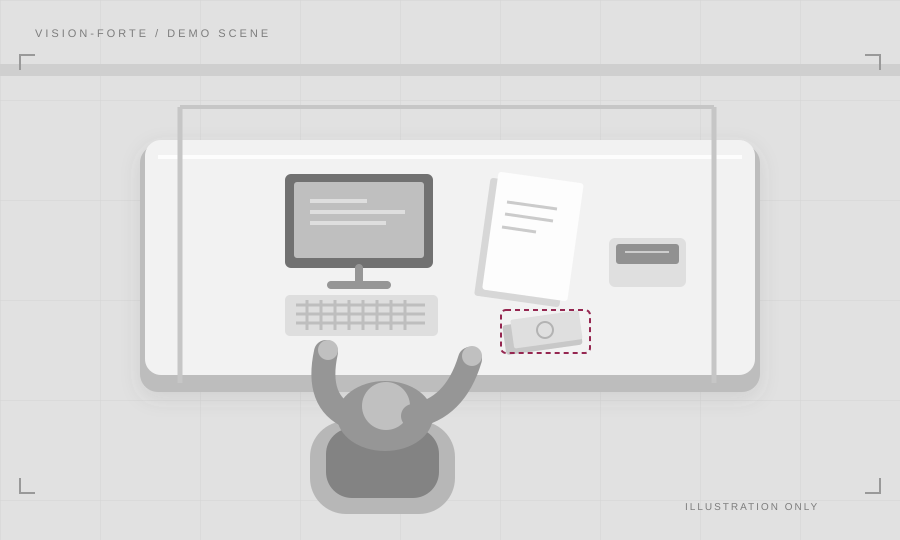

Проверка видео
Загрузите запись кассовой операции для проверки.
ДЕМОМодель не подключена. Доступен демонстрационный пример.
Видеозапись
Добавьте видеозапись
Перетащите файл в эту область или выберите его на компьютере
MOV, MP4, WEBM · до 300 МБ
Иллюстрация · не запись камерыПодготовка видео00:00
Подготавливаем демонстрацию интерфейса.
Результат проверки
Нет результатов
После проверки здесь появятся события,
таймкоды и кадры для просмотра.
ЧТО ВИДНО НА ВИДЕО
КАДРЫ-ДОКАЗАТЕЛЬСТВА
Результат помогает проверяющему. Окончательное решение принимает человек.